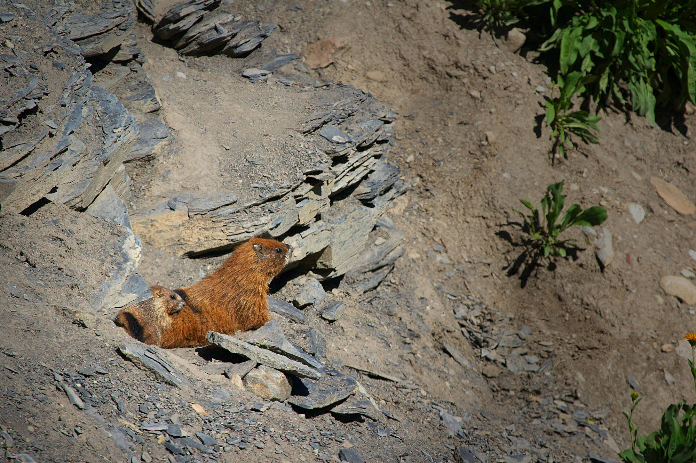

Phd in evolutionary ecology

Project
Most model of evolution consider that intra-individual variance, once corrected for environmental variation, is essentially random noise and is similar across individuals. However, recent studies in captivity showed that within-individual variance could in fact have a genetic basis. In addition, several studies on captive animal have shown the evolutionary importance of the genetic variance in individual variation. For examples, animal breeding try to select for milking cows with low daily variation in milk production to facilitate stock prediction and management. So if we start to understand the importance and the interest of the genetic basis of within-individual variation in breeding programs, the evolutionary importance of this genetic component remain relatively unknown in the wild. Consequently, to better understand evolution in the wild it is key to evaluate the existence and quantify the amount of genetic variance in the intra-individual variance of traits and how it correlates with other traits including fitness. Ideally to get a wider understanding of the phenomenon, such study would need to look at multiple type of traits and across multiple species. Since this has rarely been done, to get a better understanding this needs to be evaluated across multiple traits and species. The aim of this project is to used new quantitative genetic models, a statistical approach allowing to estimate the genetic variance in a trait in wild population, to quantify the genetic variation in within-individual variance in multiple traits across at least 5 species using long-term pedigreed natural populations including yellow-bellied marmots, alpine swifts, eastern chipmunks, bighorn sheep and red squirrels. The project will thus be based on over 150 years of field work (combined across all species). This project will offer opportunity to learn a variety of important methods in evolutionary biology and to participate in the field work on the marmot system. The student will be given a thorough training in field skills and in statistical modelling to tease apart the amount of trait variance explained by genetic and environmental effects.
Relevant publications
- Prentice PM, Houslay TM, Martin JGA, Wilson AJ. 2020 Genetic variance for behavioural ‘predictability’ of stress response. Journal of Evolutionary Biology 33, 642–652.
- Martin JGA et al. 2017. Genetic basis of between- and within-individual variance of docility. Journal of Evolutionary Biology, 30(4):796-805.
- Westneat DF, Wright J, Dingemanse NJ. 2015 The biology hidden inside residual within-individual phenotypic variation. Biological Reviews 90, 729–743.
Affiliation and life
The project will be supervised by Pr. Julien Martin (uOttawa). The project will be done in collaborations with the project leaders of participating long-term studies. The student will be based at the Biology department of the University of Ottawa. He/she will have the opportunity to perform field work over the summer in Colorado on the yellow-bellied marmot long-term study and to visit project leaders in Canada (Ottawa, Montreal, Sherbrooke, Edmonton), United-States (Los-Angeles, Boulder) and United-Kingdom (Aberdeen).
Ottawa consistently ranks among the best Canadian cities. You’ll love an easy-going lifestyle that appeals to urban adventurers and nature lovers alike. Enjoy a revitalized city that is bursting with energy. Gigs, festivals, theatre and art are all close by in a walkable downtown core. And, having the 2nd highest concentration of scientists and engineers in North America, you’ll have lots of opportunities to build up your network and kick-start your career.
Financial support
Financial support is available for 4 years. The student is expected to complete two teaching assistantship per year.
Starting date
Ideally September 2021 or January 2022
Candidate Profile
For this PhD project our ideal candidate:
- has a MSc in biology
- is creative, highly motivated and can work alone or in teams
- has strong interest in evolutionary biology and quantitative genetics
- has strong interest for statistical analyses and past experience with R programming
How to apply
Students that are interested should send by email to Julien Martin (julien.martin@uottawa.ca):
- a writing sample (thesis, paper or scientific article),
- a CV, a motivation letter
- the contact of two references
- a copy of their transcripts